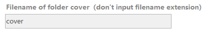
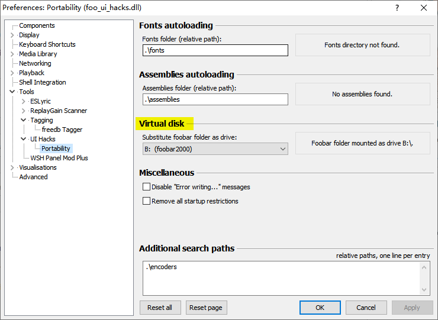
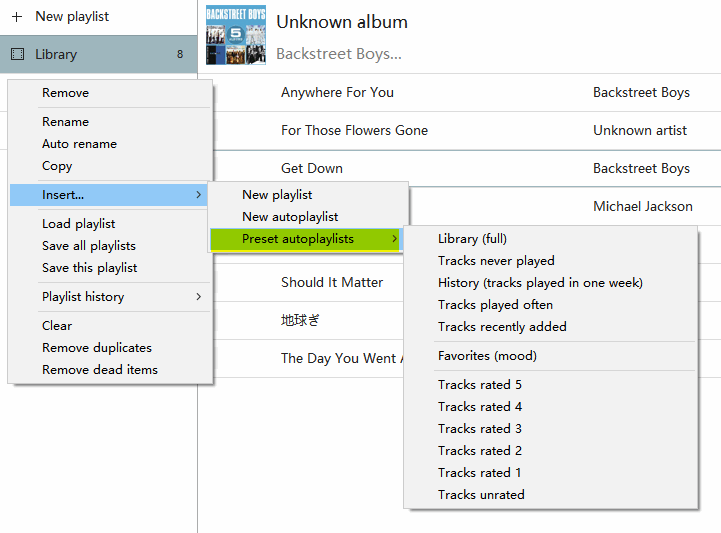
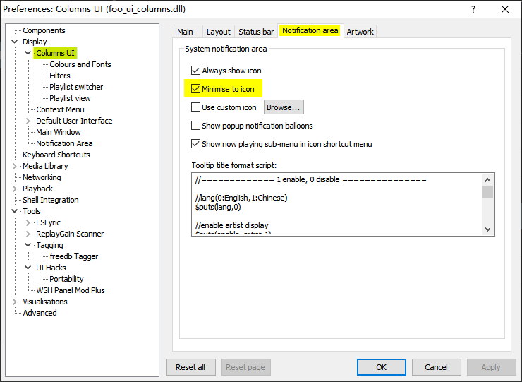
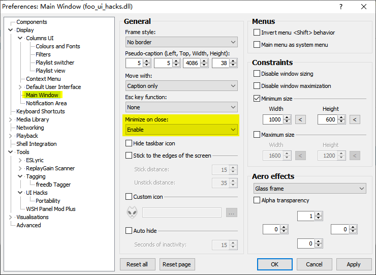

[Invalid inputbox?]
Very important: after input in the inputbox of all panels, you must press ENTER to validate the input. Press ENTER key, not click the mouse outside the inputbox.
[Why mounted to B drive?]
Foobar2000 folder will be mounted to B drive by default. This make foobox full portable. Please don't change this setting, otherwise some functions may not work properly. B drive only, not A or others.
[Add QAAC encoder to foobox]
Converter presets include Apple QAAC settings, but you need to manually add QAAC encoders to foobox. Below is the link of encoder pack for QAAC with runtime envrionment integrated.
http://www.foobar2000.com.cn/component/showdownload.php?lang=cn&id=25
Use：Coppy all files of qaac folder (32bit) or qaac64 folder (64位)to encoders directory under foobar2000.
[Preset autoplaylists]
You can create preset autoplaylists easily in the right click menu of palylist manager panel.
[On screen display search]
On-screen search on main panels of foobox help you locate the track easily by keyboard input.
Keywords of on-screen search for each panels are different:
- Playlist view: Title, Artist, Album.
- Lib tree: node name of current mode.
- Cover art panel: group name of current mode.
[Searchbox in topbar]
Powerful searchbox. There are three(3) search modes: Playlist, Library, Internet.
Left click the icon to swith the search mode, right click the icon to pop-up the option menu.
[Internet search]
Right-click popup menu in the internet search mode as below:
You can switch the search source, search format, open music boards and radio. For page switch and update of the search results, download, please refer to section "Playlist view toolbar".
[Playlist view tips]
* Press F2 key to locate the playing track.
* Tab key to collapse all groups.
* Control + Tab to expand all groups.
* Control + T to hide/display header topbar or search bar
* Other mouse clicking hot areas are indicated below.
[Tips for Cover Browser]
* Can create autoplaylist easily in the popup menu if the cover.
* Other mouse clicking hot areas are indicated below.

[About ratings]
Retrieve rating information for the audio files' tags:
In foobox, ratings are recorded by playcount component, not writing to files' tags. If you want to change the setting, please go to "foobox settings" - "Ratings Data"
[Minimize or close foobox to system tray]
foobox is based on CUI, not default user interface (DUI), if you want to close foobar2000 to the system tray, please follow below to make it work.

---Check this file when updated. And you will find more during using foobox---